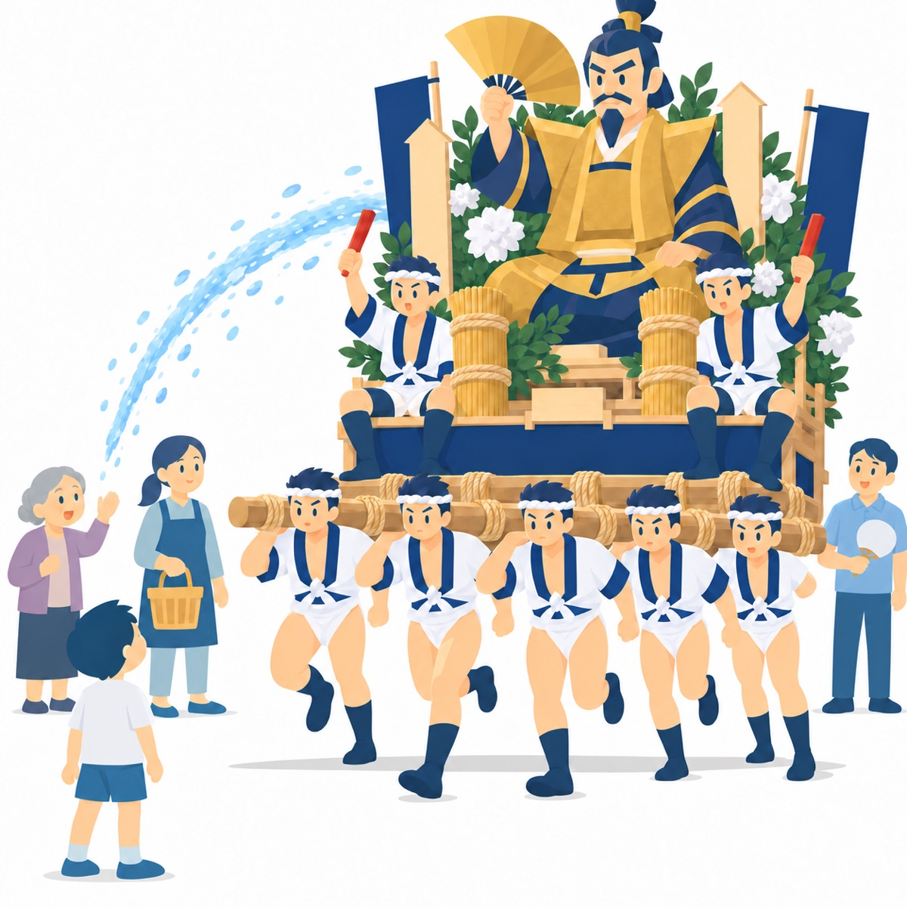
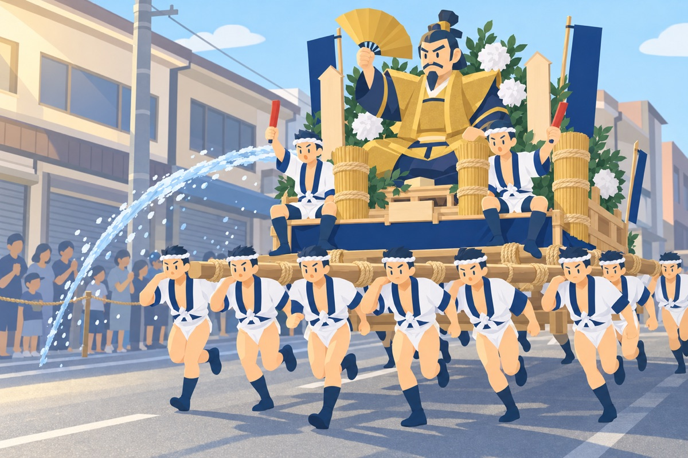

きょうの社会 第7時
祭りを支える人とくふう祭りや行事は
だれに どのように
支えられて いるのだろう

絵 School Stock前の時間に 分かったこと
かつぐ人
約600人が
約100メートルごとに 交代して かつぐ
参加する人
高校生 会社の人 大学生 外国の人も
いっしょに 参加している
思い
みんなの 聞き取りから
参加する人の 思いを 考えた
学習問題飯塚山笠や 博多祇園山笠など 祭りや行事は 何のために つくって なぜ みんな 参加するのだろう
何のために
何のために
つくったのだろう
なぜ参加
なぜ みんな
参加するのだろう
きょうは 祭りを 支える人と くふうを 調べる
03山笠に 参加しているのは

絵：School Stockかつぐ人 だけ？
ほかに だれが いるだろう
支える人の 表
| だれが | どのように 支えている？ |
|---|---|
資料から 見つけて 書こう
05きょうの すすめ方
1つかむ5分
かつぐ人の ほかに だれが いるか 予想する
2調べる18分
資料から 支える人と 役わりを 見つけて 表にする
3考える15分
追い山を 日曜日にした わけを 考える
4まとめる7分
まとめと ふり返りを 書く